| N° | Contenido |
|---|---|
| 1 | Activar paquetes |
| 2 | Distribución Normal |
| — Características Clave | |
| — Parámetros | |
| — Fórmulas | |
| — Ejercicio 6.7 | |
| — Ejercicio 6.11 | |
| — Ejercicio 6.13 | |
| — Ejercicio 6.15 | |
| 3 | Distribución Ji-Cuadrado |
| — Parámetros y Características | |
| — Función de densidad | |
| — Familia de Curvas | |
| — Ejercicio 8.39 | |
| — Ejercicio 8.41 | |
| 4 | Distribución T de Student |
| — Principales características | |
| — Familia de Curvas | |
| — Ejercicio 8.47 | |
| — Ejercicio 8.49 | |
| 5 | Teorema del Límite Central |
| — Simulación Uniforme | |
| — Simulación Binomial | |
| — Simulación Poisson | |
| — Simulación Hipergeométrica | |
| — Simulación Exponencial | |
| — App Interactiva TCL | |
| Distribución F de Fisher |
VARIABLES ALEATORIAS Y DISTRIBUCIONES DE PROBABILIDAD
TALLER N° 2
Tabla de Contenido
1 .Activar paquetes
Ver código
library(tidyverse)
library(kableExtra)
library(dplyr)2 .Distribucion Normal
La distribución normal, también conocida como distribución gaussiana o campana de Gauss, es la distribución de probabilidad continua más importante en la estadística. Su importancia radica en que muchos fenómenos naturales, sociales y económicos siguen este patrón.
La distribución normal es la distribución de probabilidad continua más usada en estadística y una herramienta fundamental para modelar una inmensa variedad de fenómenos en las ciencias, la ingeniería y la economía. Su popularidad se debe a una propiedad matemática conocida como el Teorema del Límite Central, que establece que la suma o el promedio de un gran número de variables aleatorias independientes (sin importar su distribución original) tiende a seguir una distribución normal.
2.1 Características Clave
Forma de Campana: La distribución es simétrica alrededor de su media, creando una curva con forma de campana. El punto más alto de la campana es la media.
Media, Mediana y Moda Coincidentes: En una distribución normal perfecta, estos tres valores son iguales y se encuentran en el centro de la curva.
Asintótica al Eje Horizontal: La curva se extiende indefinidamente en ambas direcciones, acercándose al eje x pero sin llegar a tocarlo.
Regla Empírica: Alrededor del 68% de los datos se encuentran dentro de una desviación estándar de la media (\mu \pm \sigma), el 95% dentro de dos desviaciones estándar (\mu \pm 2\sigma), y el 99.7% dentro de tres desviaciones estándar (\mu \pm 3\sigma).
2.2 Parámetros
La distribución normal está completamente definida por dos parámetros:
Media (\mu): Indica la ubicación del centro de la curva y el valor más probable.
Varianza \sigma^2 o Desviación Estándar (\sigma): Mide la dispersión o variabilidad de los datos. Una \sigma grande resulta en una curva más ancha y aplanada, mientras que una \sigma pequeña crea una curva más estrecha y alta.
2.3 Fórmulas
La fórmula principal de la distribución normal es la función de densidad de probabilidad (FDP). Esta función no calcula la probabilidad de un punto exacto, sino la densidad de probabilidad en ese punto.
Función de Densidad de Probabilidad (FDP):
f(x) = \frac{1}{\sigma\sqrt{2\pi}} e^{-\frac{1}{2}\left(\frac{x-\mu}{\sigma}\right)^2}
Donde:
- x es el valor de la variable aleatoria.
- \mu es la media.
- \sigma es la desviación estándar.
- e es el número de Euler (aproximadamente 2.71828).
- \pi es la constante pi (aproximadamente 3.14159).
Para calcular probabilidades, se utiliza la distribución normal estándar, que tiene una media de 0 y una desviación estándar de 1. Cualquier variable normal puede estandarizarse usando la siguiente fórmula:
Fórmula de Estandarización (puntuación Z):
Z = \frac{x - \mu}{\sigma}
La puntuación Z nos dice cuántas desviaciones estándar está un valor dado de la media. Luego, se usan tablas o software estadístico para encontrar las probabilidades correspondientes.
2.4 Ejercicios
2.4.1 Ejercicio 6.7
Un investigador científico informa que unos ratones vivirán un promedio de 40 meses cuando sus dietas se restringen drásticamente y después se enriquecen con vitaminas y proteínas. Suponiendo que la vidas de tales ratones se distribuyen normalmente con una desviación estándar de 6.3 meses, encuentre la probabilidad de que un ratón dado vivirá:
- más de 32 meses
- menos de 28 meses
- entre 37 y 49 meses
2.4.1.1 Parametros
Ver código
mu_67 <- 40
sigma_67 <- 6.32.4.1.2 Solucion a los incisos
Cual es probabilidad de que un ratón dado vivirá más de 32 meses.
Ver código
prob_a_67 <- 1 - pnorm(32, mean = mu_67, sd = sigma_67)
cat("a)", round(prob_a_67, 4))a) 0.8979La probabilidad de que un ratón viva más de 32 meses es 0.8979.
2.4.1.2.1 Grafica
Ver código
x <- seq(mu_67 - 4*sigma_67, mu_67 + 4*sigma_67, length.out = 500)
df_67 <- data.frame(x = x, y = dnorm(x, mu_67, sigma_67))
shade_a <- subset(df_67, x >= 32)
ggplot(df_67, aes(x, y)) +
geom_line(linewidth = 1) +
geom_area(data = shade_a, aes(x, y), fill = "#4472C4", alpha = 0.5) +
geom_vline(xintercept = 32, linetype = "dashed", color = "gray40") +
annotate("text", x = 32, y = 0.005, label = "32 meses", hjust = 1.1) +
labs(title = "Distribucion Normal",
subtitle = "Probabilidad de vivir más de 32 meses",
x = "Vida en meses", y = "Densidad de Probabilidad") +
theme_minimal()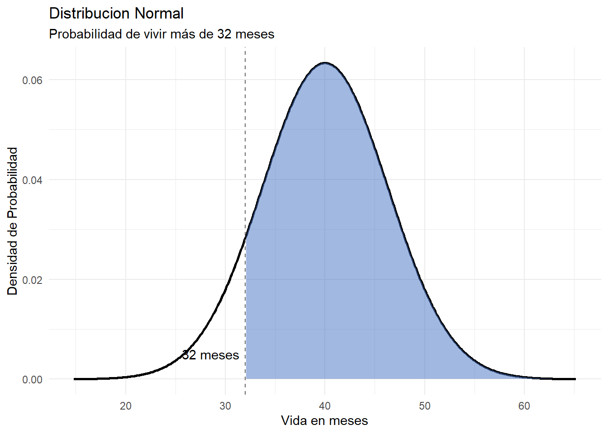
La probabilidad de que un ratón viva más de 32 meses es 89.79%.
Cual es probabilidad de que un ratón dado vivirá menos de 28 meses.
Ver código
prob_b_67 <- pnorm(28, mean = mu_67, sd = sigma_67)
cat("b)", round(prob_b_67, 4))b) 0.0284La probabilidad de que un ratón viva menos de 28 meses es 0.0284.
2.4.1.2.2 Grafica
Ver código
shade_b <- subset(df_67, x <= 28)
ggplot(df_67, aes(x, y)) +
geom_line(linewidth = 1) +
geom_area(data = shade_b, aes(x, y), fill = "#E74C3C", alpha = 0.5) +
geom_vline(xintercept = 28, linetype = "dashed", color = "gray40") +
annotate("text", x = 28, y = 0.005, label = "28 meses", hjust = -0.1) +
labs(title = "Distribucion Normal",
subtitle = "Probabilidad de vivir menos de 28 meses",
x = "Vida en meses", y = "Densidad de Probabilidad") +
theme_minimal()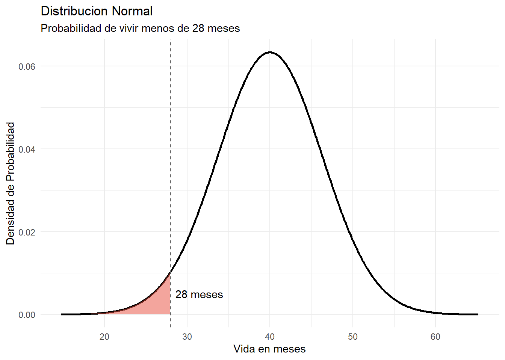
La probabilidad de que un ratón viva menos de 28 meses es 2.84%.
Cual es probabilidad de que un ratón dado vivirá entre 37 y 49 meses.
Ver código
prob_c_67 <- pnorm(49, mean = mu_67, sd = sigma_67) - pnorm(37, mean = mu_67, sd = sigma_67)
cat("c)", round(prob_c_67, 4))c) 0.6065La probabilidad de que un ratón viva entre 37 y 49 meses es 0.6065.
2.4.1.2.3 Grafica
Ver código
shade_c <- subset(df_67, x >= 37 & x <= 49)
ggplot(df_67, aes(x, y)) +
geom_line(linewidth = 1) +
geom_area(data = shade_c, aes(x, y), fill = "#27AE60", alpha = 0.5) +
geom_vline(xintercept = c(37, 49), linetype = "dashed", color = "gray40") +
labs(title = "Distribucion Normal",
subtitle = "Probabilidad de vivir entre 37 y 49 meses",
x = "Vida en meses", y = "Densidad de Probabilidad") +
theme_minimal()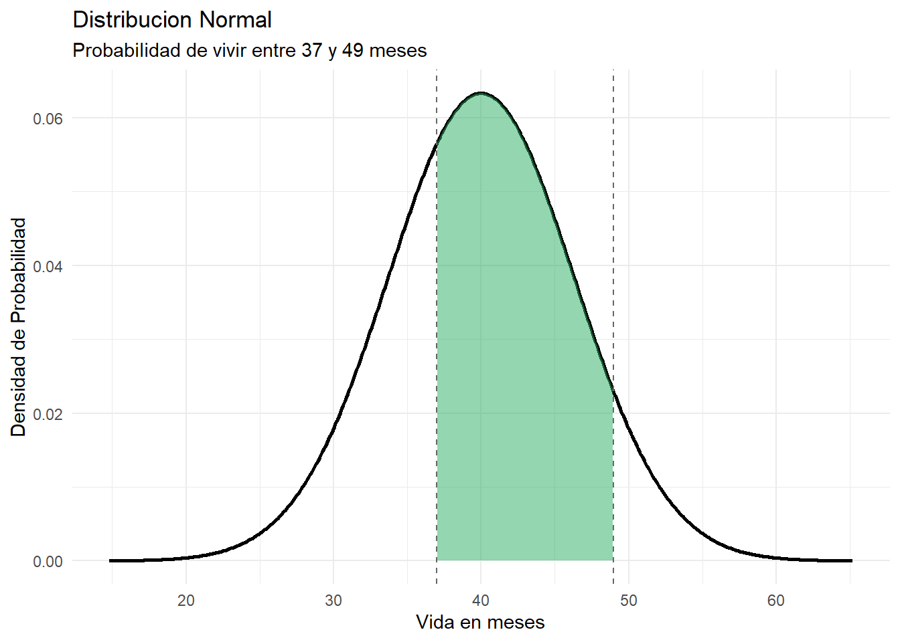
La probabilidad de que un ratón viva entre 37 y 49 meses es 60.65%.
2.4.2 Ejercicio 6.11
Un abogado viaja todos los días de su casa en los suburbios a su oficina en el centro de la ciudad. El tiempo promedio para un viaje sólo de ida es 24 minutos, con una desviación estándar de 3.8 minutos. Suponga que la distribución de los tiempos de viaje está distribuida normalmente.
- ¿Cuál es la probabilidad de que un viaje tome al menos 1/2 hora?
- Si la oficina abre a las 9:00 A.M. y él sale diario de su casa a las 8:45 A.M., ¿qué porcentaje de las veces llegará tarde al trabajo?
- Si sale de su casa a las 8:35 A.M. y el café se sirve en la oficina de 8:50 A.M. a 9:00 A.M., cuál es la probabilidad de que se pierda el café?
- Encuentre la longitud de tiempo por arriba de la cual encontramos el 15% de los viajes más lentos.
- Encuentre la probabilidad de que 2 de los siguientes 3 viajes tomen al menos 1/2 hora.
2.4.2.1 Parametros
Ver código
mu_611 <- 24
sigma_611 <- 3.82.4.2.2 Solucion a los incisos
¿Cuál es la probabilidad de que un viaje tome al menos 1/2 hora?
Ver código
prob_a_611 <- 1 - pnorm(30, mean = mu_611, sd = sigma_611)
cat("a)", round(prob_a_611, 4))a) 0.0572La probabilidad de que un viaje tome al menos 1/2 hora es de 0.0572.
2.4.2.2.1 Grafica
Ver código
x2 <- seq(mu_611 - 4*sigma_611, mu_611 + 4*sigma_611, length.out = 500)
df_611 <- data.frame(x = x2, y = dnorm(x2, mu_611, sigma_611))
shade_611a <- subset(df_611, x >= 30)
ggplot(df_611, aes(x, y)) +
geom_line(linewidth = 1) +
geom_area(data = shade_611a, aes(x, y), fill = "#E74C3C", alpha = 0.5) +
geom_vline(xintercept = 30, linetype = "dashed", color = "gray40") +
labs(title = "Distribucion Normal",
x = "Tiempo de viaje (minutos)", y = "Densidad de Probabilidad") +
theme_minimal()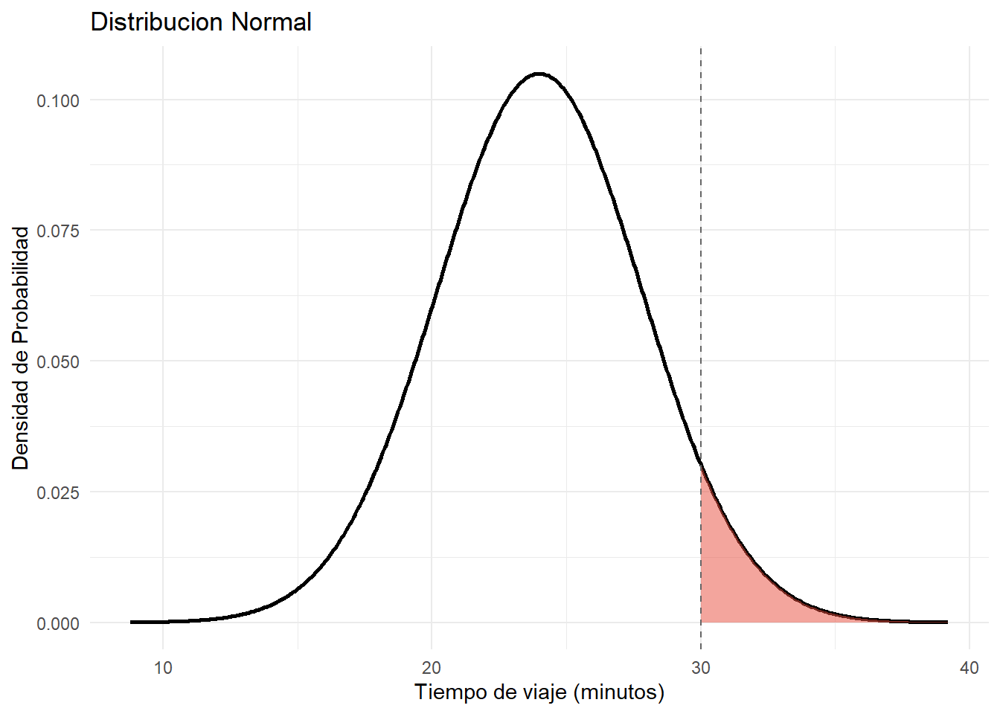
La probabilidad de que un viaje tome al menos 1/2 hora es de 5.72%.
Si la oficina abre a las 9:00 A.M. y sale a las 8:45 A.M. (15 min disponibles):
Ver código
prob_b_611 <- 1 - pnorm(15, mean = mu_611, sd = sigma_611)
cat("b)", round(prob_b_611, 4))b) 0.9911Llegará tarde el 99.11% de las veces.
Sale a las 8:35 A.M. Café de 8:50 a 9:00 A.M. (disponible entre 15 y 25 min de viaje):
Ver código
prob_c_611 <- 1 - (pnorm(25, mu_611, sigma_611) - pnorm(15, mu_611, sigma_611))
cat("c)", round(prob_c_611, 4))c) 0.4051La probabilidad de perderse el café es 40.51%.
Percentil 85 (15% de viajes más lentos por encima):
Ver código
perc_d_611 <- qnorm(0.85, mean = mu_611, sd = sigma_611)
cat("d)", round(perc_d_611, 4), "minutos")d) 27.9384 minutosEl 15% de los viajes más lentos superan los 27.94 minutos.
Probabilidad binomial: 2 de 3 viajes tomen ≥ 30 min:
Ver código
p_viaje <- 1 - pnorm(30, mu_611, sigma_611)
prob_e_611 <- dbinom(2, size = 3, prob = p_viaje)
cat("e)", round(prob_e_611, 4))e) 0.0092La probabilidad de que exactamente 2 de 3 viajes tomen ≥ 30 min es 0.0092.
2.4.3 Ejercicio 6.13
La vida promedio de cierto tipo de motor pequeño es de 10 años con una desviación estándar de 2 años. El fabricante reemplaza gratis todos los motores que fallen dentro del periodo de garantía. Si él está dispuesto a reemplazar sólo 3% de los motores que fallan, ¿cuánto tiempo de garantía debería ofrecer? Suponga que la duración de un motor sigue una distribución normal.
2.4.3.1 Parametros
Ver código
mu_613 <- 10
sigma_613 <- 22.4.3.2 Solucion
Ver código
garantia <- qnorm(0.03, mean = mu_613, sd = sigma_613)
cat("El fabricante debería ofrecer una garantía de:", round(garantia, 2), "años")El fabricante debería ofrecer una garantía de: 6.24 años2.4.3.3 Grafica
Ver código
x3 <- seq(mu_613 - 4*sigma_613, mu_613 + 4*sigma_613, length.out = 500)
df_613 <- data.frame(x = x3, y = dnorm(x3, mu_613, sigma_613))
shade_613 <- subset(df_613, x <= garantia)
ggplot(df_613, aes(x, y)) +
geom_line(linewidth = 1) +
geom_area(data = shade_613, aes(x, y), fill = "#9B59B6", alpha = 0.5) +
geom_vline(xintercept = garantia, linetype = "dashed", color = "#6C3483") +
annotate("text", x = garantia, y = 0.01,
label = paste(round(garantia, 2), "años"), hjust = 1.1, size = 4) +
labs(title = "Período de Garantía de los Motores",
subtitle = "El 3% de los motores fallará antes del período de garantía",
x = "Vida útil del motor (años)", y = "Densidad de Probabilidad") +
theme_minimal()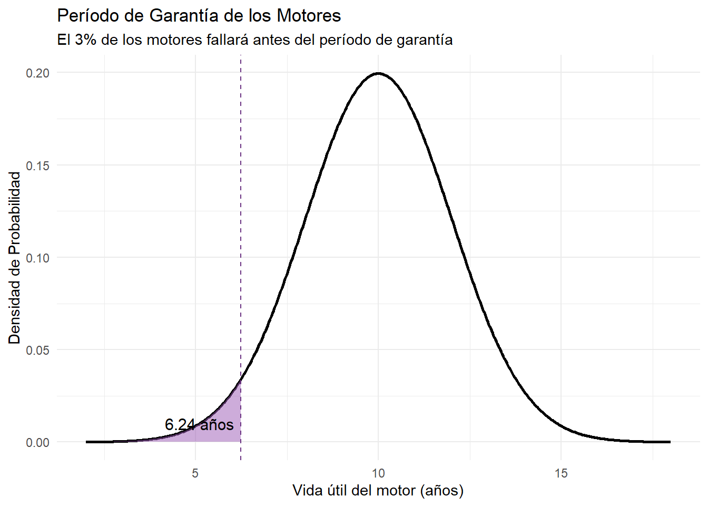
El fabricante debería ofrecer una garantía de 6.24 años.
2.4.4 Ejercicio 6.15
Una compañía paga a sus empleados un salario promedio de $15.90 por hora con una desviación estándar de $1.50. Si los salarios se distribuyen aproximadamente de forma normal y se pagan al centavo más cercano:
- ¿qué porcentaje de los trabajadores reciben salarios entre $13.75 y $16.22 inclusive por hora?
- ¿el 5% más alto de los salarios por hora de los empleados es mayor a qué cantidad?
2.4.4.1 Parametros
Ver código
mu_615 <- 15.90
sigma_615 <- 1.502.4.4.2 Solucion a los incisos
¿Qué porcentaje de los trabajadores reciben salarios entre $13.75 y $16.22 inclusive por hora?
Ver código
prob_a_615 <- pnorm(16.22, mu_615, sigma_615) - pnorm(13.75, mu_615, sigma_615)
cat("a)", round(prob_a_615 * 100, 2), "%")a) 50.86 %El porcentaje de trabajadores con salarios entre $13.75 y $16.22 es 50.86 %.
2.4.4.2.1 Grafica
Ver código
x4 <- seq(mu_615 - 4*sigma_615, mu_615 + 4*sigma_615, length.out = 500)
df_615 <- data.frame(x = x4, y = dnorm(x4, mu_615, sigma_615))
shade_615a <- subset(df_615, x >= 13.75 & x <= 16.22)
ggplot(df_615, aes(x, y)) +
geom_line(linewidth = 1) +
geom_area(data = shade_615a, aes(x, y), fill = "#27AE60", alpha = 0.5) +
geom_vline(xintercept = c(13.75, 16.22), linetype = "dashed", color = "gray40") +
labs(title = "Porcentaje de salarios entre $13.75 y $16.22",
x = "Salario por hora ($)", y = "Densidad de probabilidad") +
theme_minimal()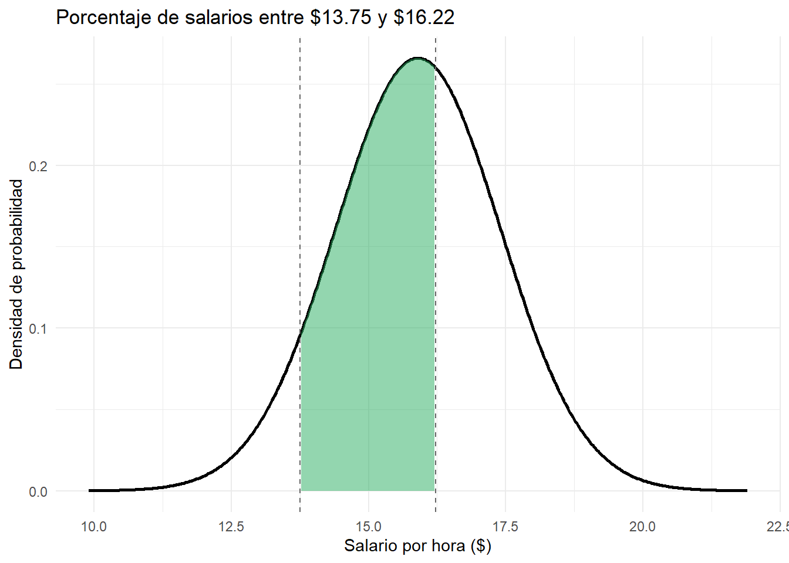
El porcentaje de trabajadores con salarios entre $13.75 y $16.22 es 50.86 %.
¿El 5% más alto de los salarios por hora de los empleados es mayor a qué cantidad?
Ver código
perc_b_615 <- qnorm(0.95, mu_615, sigma_615)
cat("b) El 5% más alto gana más de $", round(perc_b_615, 2), "por hora")b) El 5% más alto gana más de $ 18.37 por horaEl 5% más alto de los salarios supera los $18.37 por hora.
3 .Distribucion Ji Cuadrado
La distribución ji-cuadrado x^2 es una distribución de probabilidad continua definida solo para valores positivos, que surge de la suma de los cuadrados de variables normales estándar independientes, dependiendo de un parámetro llamado grados de libertad (k). Su media es k, su varianza 2k y su forma varía según k: es muy asimétrica para valores pequeños y se aproxima a una normal al crecer.
3.1 Parámetros y Características
A diferencia de la distribución normal, la distribución ji cuadrado no está definida por una media y una desviación estándar, sino por un único parámetro:
Grados de libertad (v o df): Este parámetro determina la forma de la distribución. A medida que los grados de libertad aumentan, la forma de la distribución se vuelve más simétrica y se aproxima a una distribución normal.
Valores No Negativos: La variable ji cuadrado x^2 solo puede tomar valores positivos, ya que se calcula a partir de la suma de cuadrados.
Asimétrica a la Derecha: La distribución es asimétrica con una cola larga hacia la derecha.
Media y Varianza: La media de la distribución es igual a los grados de libertad (\mu=v), y la varianza es el doble de los grados de libertad \left(\sigma^2 = 2v\right).
3.2 Función de densidad de probabilidad
f(x; k) = \frac{1}{2^{k/2} \Gamma\left(\frac{k}{2}\right)} x^{\frac{k}{2}-1} e^{-x/2}, \quad x > 0
3.3 Familias de Curvas Chi Cuadrado
Ver código
x_chi <- seq(0.001, 40, length.out = 500)
df_chi_fam <- bind_rows(lapply(c(4, 5, 10), function(k) {
data.frame(x = x_chi, y = dchisq(x_chi, k), k = paste0("k = ", k))
}))
ggplot(df_chi_fam, aes(x, y, color = k)) +
geom_line(linewidth = 1.1) +
ylim(0, 0.2) +
labs(title = "Familia de curvas χ²",
subtitle = "Densidades para distintos grados de libertad",
x = "x", y = "Densidad", color = "Grados de libertad (k)") +
theme_minimal()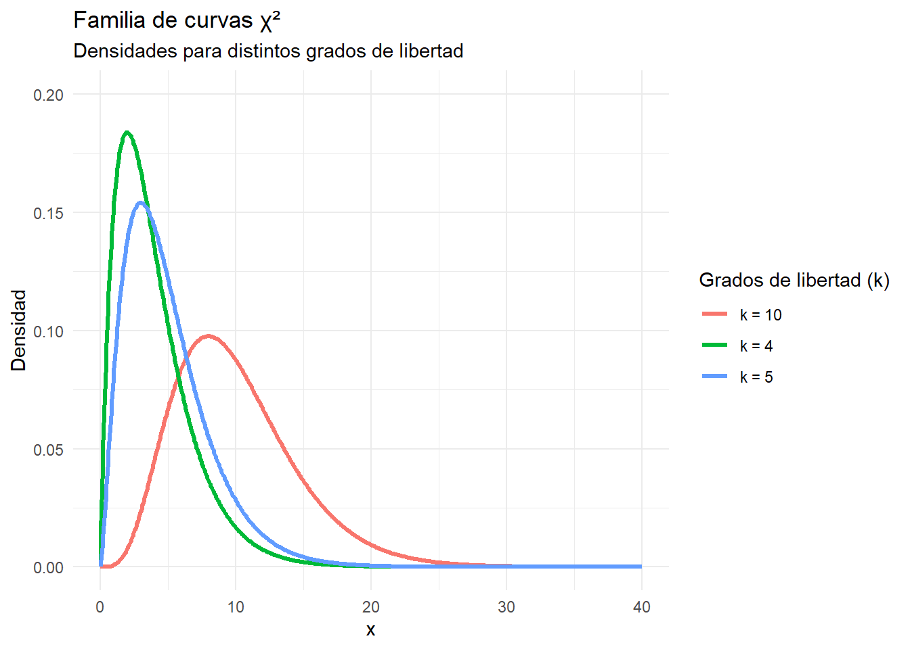
3.4 Ejercicios
3.4.1 Ejercicio 8.39
Para una distribución chi cuadrada encuentre:
- \chi^2_{0.025} cuando v = 15
- \chi^2_{0.01} cuando v = 7
- \chi^2_{0.05} cuando v = 24
3.4.1.1 Solucion a los incisos
Ver código
chi_a <- qchisq(1 - 0.025, df = 15)
chi_b <- qchisq(1 - 0.01, df = 7)
chi_c <- qchisq(1 - 0.05, df = 24)
cat("[1]", round(chi_a, 5), "\n")[1] 27.48839 Ver código
cat("[1]", round(chi_b, 5), "\n")[1] 18.47531 Ver código
cat("[1]", round(chi_c, 5), "\n")[1] 36.41503 3.4.1.2 Gráficas
Ver código
grafica_chi_doc <- function(df_val, alpha, titulo) {
x_max <- qchisq(0.999, df_val)
x <- seq(0.001, x_max, length.out = 600)
y <- dchisq(x, df_val)
critico <- qchisq(1 - alpha, df_val)
dat <- data.frame(x = x, y = y)
shade <- subset(dat, x >= critico)
ggplot(dat, aes(x, y)) +
geom_line(color = "#2980B9", linewidth = 1.1) +
geom_area(data = shade, aes(x, y), fill = "#E74C3C", alpha = 0.5) +
geom_vline(xintercept = critico, linetype = "dashed", color = "#C0392B") +
labs(title = titulo,
subtitle = paste0("df = ", df_val, " , α = ", alpha, " , crítico = ", round(critico, 2)),
x = "x", y = "Densidad") +
theme_minimal()
}
grafica_chi_doc(15, 0.025, "Distribución Chi-cuadrado (a)")
grafica_chi_doc(7, 0.01, "Distribución Chi-cuadrado (b)")
grafica_chi_doc(24, 0.05, "Distribución Chi-cuadrado (c)")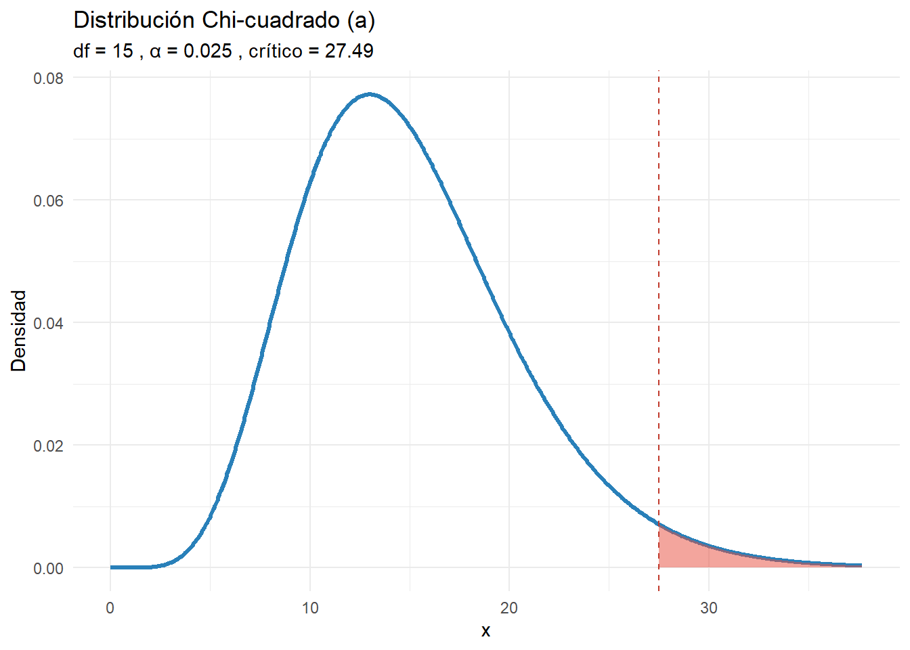
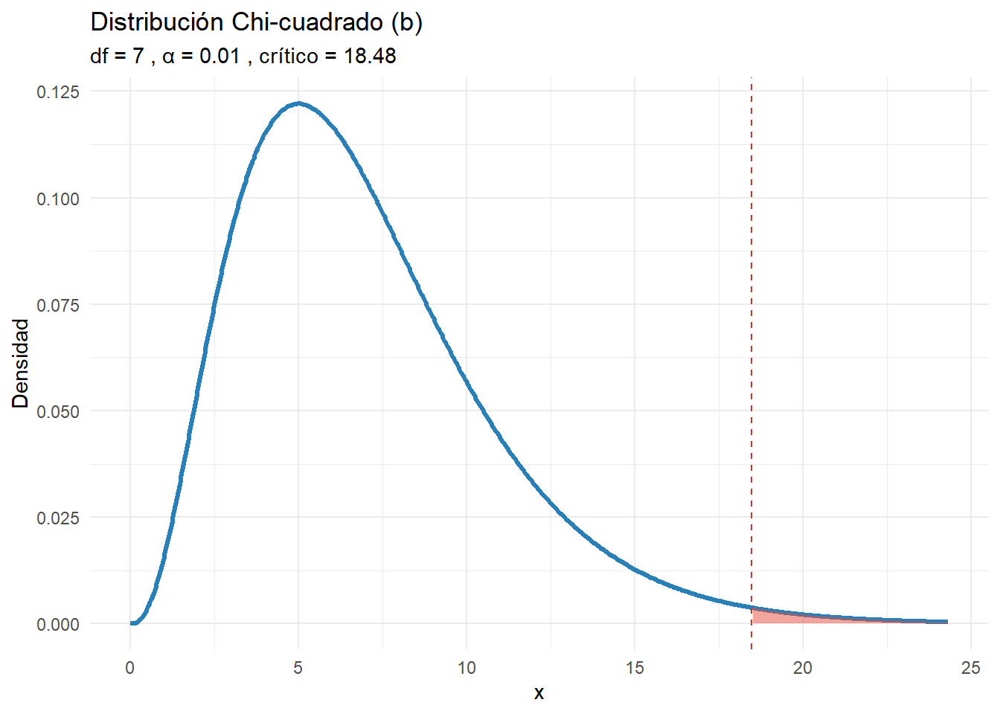
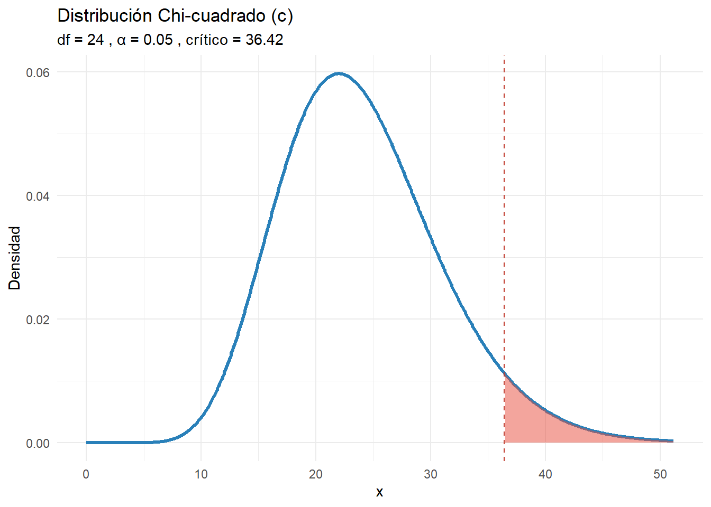
3.4.2 Ejercicio 8.41
Para una distribución chi cuadrada encuentre \chi^2_{\alpha} tal que:
- P(X^2 > \chi^2_\alpha) = 0.99 cuando v = 4
- P(X^2 > \chi^2_\alpha) = 0.025 cuando v = 19
- P(37.652 < X^2 < \chi^2_\alpha) = 0.045 cuando v = 25
Ver código
chi_841a <- qchisq(0.01, df = 4)
chi_841b <- qchisq(0.975, df = 19)
chi_841c <- qchisq(pchisq(37.652, df = 25, lower.tail = FALSE) - 0.045,
df = 25, lower.tail = FALSE)
cat("[1]", round(chi_841a, 7), "\n")[1] 0.2971095 Ver código
cat("[1]", round(chi_841b, 5), "\n")[1] 32.85233 Ver código
cat("[1]", round(chi_841c, 5), "\n")[1] 46.92392 3.4.2.1 Gráficas
Ver código
# a) región izquierda
x4a <- seq(0.001, 15, length.out=600)
dat4a <- data.frame(x=x4a, y=dchisq(x4a,4))
shade4a <- subset(dat4a, x <= chi_841a)
ggplot(dat4a, aes(x,y)) + geom_line(color="#2980B9",linewidth=1.1) +
geom_area(data=shade4a, aes(x,y), fill="#E74C3C", alpha=0.5) +
geom_vline(xintercept=chi_841a, linetype="dashed",color="#C0392B") +
labs(title="Distribución Chi-cuadrado con v = 4",
subtitle="Caso a con región sombreada", x="X²", y="Densidad") +
theme_minimal()
# b)
x4b <- seq(0.001, 45, length.out=600)
dat4b <- data.frame(x=x4b, y=dchisq(x4b,19))
shade4b <- subset(dat4b, x >= chi_841b)
ggplot(dat4b, aes(x,y)) + geom_line(color="#2980B9",linewidth=1.1) +
geom_area(data=shade4b, aes(x,y), fill="#E74C3C", alpha=0.5) +
geom_vline(xintercept=chi_841b, linetype="dashed",color="#C0392B") +
labs(title="Distribución Chi-cuadrado con v = 19",
subtitle="Caso b con región sombreada", x="X²", y="Densidad") +
theme_minimal()
# c)
x4c <- seq(0.001, 80, length.out=600)
dat4c <- data.frame(x=x4c, y=dchisq(x4c,25))
shade4c <- subset(dat4c, x >= 37.652 & x <= chi_841c)
ggplot(dat4c, aes(x,y)) + geom_line(color="#2980B9",linewidth=1.1) +
geom_area(data=shade4c, aes(x,y), fill="#E74C3C", alpha=0.5) +
geom_vline(xintercept=c(37.652, chi_841c), linetype="dashed",color="#C0392B") +
labs(title="Distribución Chi-cuadrado con v = 25",
subtitle="Caso c con región sombreada", x="X²", y="Densidad") +
theme_minimal()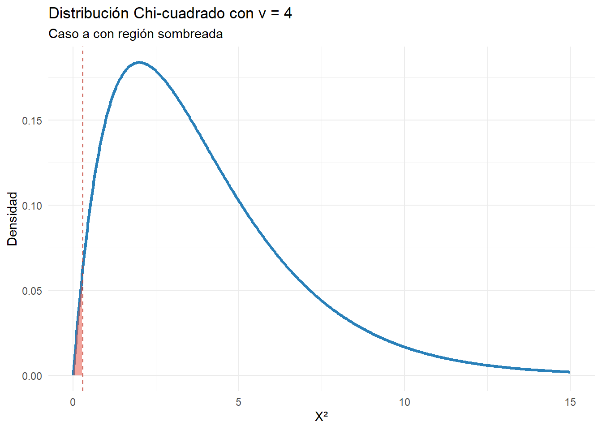
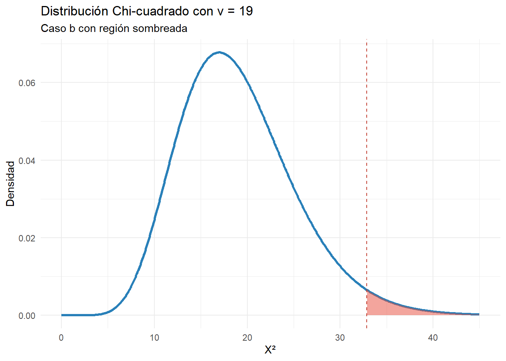
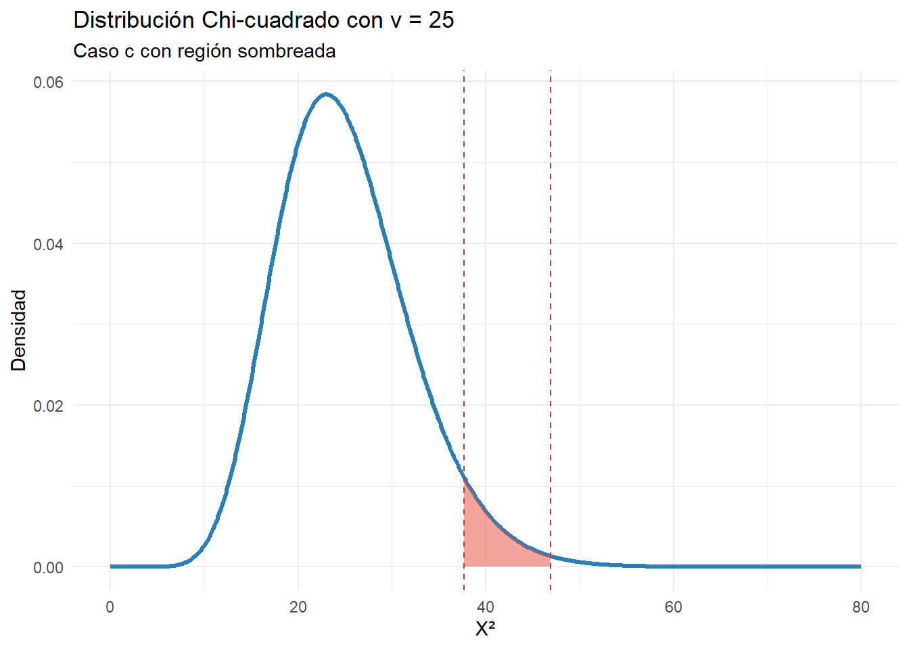
4 .Distribucion T de Student
La distribución t de Student es una distribución de probabilidad continua que surge al estimar la media de una población normalmente distribuida cuando el tamaño de la muestra es pequeño y la varianza poblacional es desconocida. Fue introducida en 1908 por William Sealy Gosset bajo el seudónimo de Student.
Matemáticamente, si Z es una variable aleatoria con distribución normal estándar N(0,1) y V es una variable con distribución chi-cuadrado con v grados de libertad, independientes entre sí, entonces la variable
T = \frac{Z}{\sqrt{V/v}}
sigue una distribución t de Student con v grados de libertad.
4.1 Principales características
- Forma: es simétrica respecto al cero, similar a la normal estándar, pero con colas más pesadas.
- Parámetro: depende de los grados de libertad (v); a mayor v, la distribución se aproxima a N(0,1).
- Media: 0 (para v > 1).
- Varianza: \frac{v}{v-2} (para v > 2).
4.2 Familia de Curvas para T de Student
Ver código
x_t <- seq(-5, 5, length.out = 500)
df_t_fam <- bind_rows(lapply(c(3, 5, 10), function(k) {
data.frame(x = x_t, y = dt(x_t, k), df = paste0("df = ", k))
}))
ggplot(df_t_fam, aes(x, y, color = df)) +
geom_line(linewidth = 1.1) +
labs(title = "Familia de curvas t-Student",
subtitle = "Diferentes grados de libertad (df)",
x = "x", y = "Densidad", color = "") +
theme_minimal()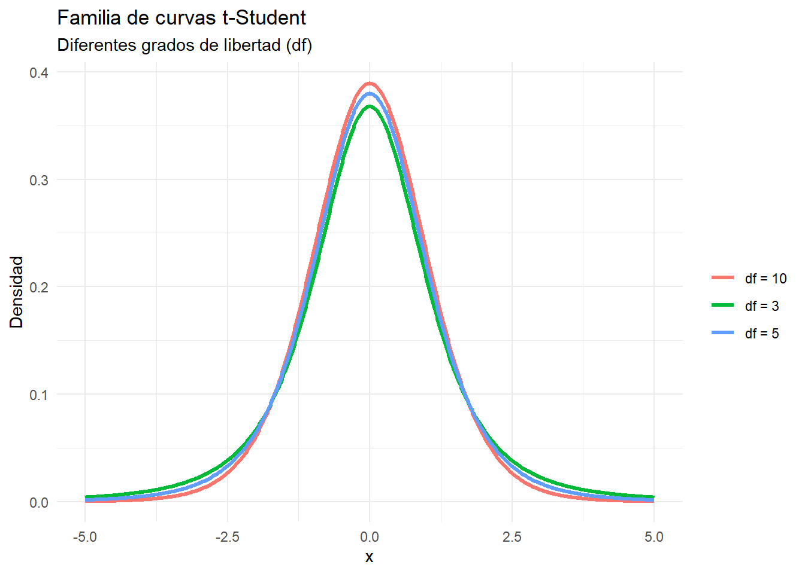
4.3 Ejercicios
4.3.1 Ejercicio 8.47
- Encuentre P(T < 2.365) cuando v = 7.
- Encuentre P(T > 1.318) cuando v = 24.
- Encuentre P(-1.356 < T < 2.179) cuando v = 12.
- Encuentre P(T > -2.567) cuando v = 17.
4.3.1.1 Solucion
Ver código
resultados_847 <- data.frame(
Inciso = c("1", "2", "3", "4"),
Descripcion = c("a","b","c","d"),
Resultado = c(
pt(2.365, df = 7),
1 - pt(1.318, df = 24),
pt(2.179, df = 12) - pt(-1.356, df = 12),
1 - pt(-2.567, df = 17)
)
)
print(resultados_847) Inciso Descripcion Resultado
1 1 a 0.97501381
2 2 b 0.09997295
3 3 c 0.87497477
4 4 d 0.990001364.3.1.2 Gráficas
Ver código
grafica_t_doc <- function(df_val, tipo, v1=NULL, v2=NULL, titulo="") {
x_t2 <- seq(-5, 5, length.out=600)
dat_t <- data.frame(x=x_t2, y=dt(x_t2,df_val))
p <- ggplot(dat_t, aes(x,y)) +
geom_line(color="#2471A3", linewidth=1.1) +
labs(title=titulo, x="t", y="Densidad") + theme_minimal()
if (tipo=="menor" && !is.null(v1)) {
shade <- subset(dat_t, x <= v1)
p <- p + geom_area(data=shade, aes(x,y), fill="#E8A0A0", alpha=0.6) +
geom_vline(xintercept=v1, linetype="dashed", color="gray40")
} else if (tipo=="mayor" && !is.null(v1)) {
shade <- subset(dat_t, x >= v1)
p <- p + geom_area(data=shade, aes(x,y), fill="#E8A0A0", alpha=0.6) +
geom_vline(xintercept=v1, linetype="dashed", color="gray40")
} else if (tipo=="entre" && !is.null(v1) && !is.null(v2)) {
shade <- subset(dat_t, x >= v1 & x <= v2)
p <- p + geom_area(data=shade, aes(x,y), fill="#AED6F1", alpha=0.7) +
geom_vline(xintercept=c(v1,v2), linetype="dashed", color="gray40")
}
p
}
grafica_t_doc(7, "menor", v1=2.365, titulo="a) P(T < 2.365), v = 7\nDistribución t con v = 7")
grafica_t_doc(24, "mayor", v1=1.318, titulo="b) P(T > 1.318), v = 24\nDistribución t con v = 24")
grafica_t_doc(12, "entre", v1=-1.356, v2=2.179, titulo="c) P(-1.356 < T < 2.179), v = 12\nDistribución t con v = 12")
grafica_t_doc(17, "mayor", v1=-2.567, titulo="d) P(T > -2.567), v = 17\nDistribución t con v = 17")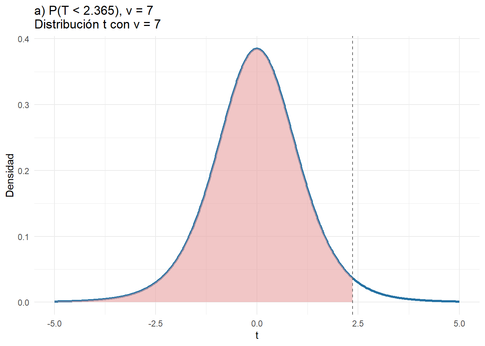
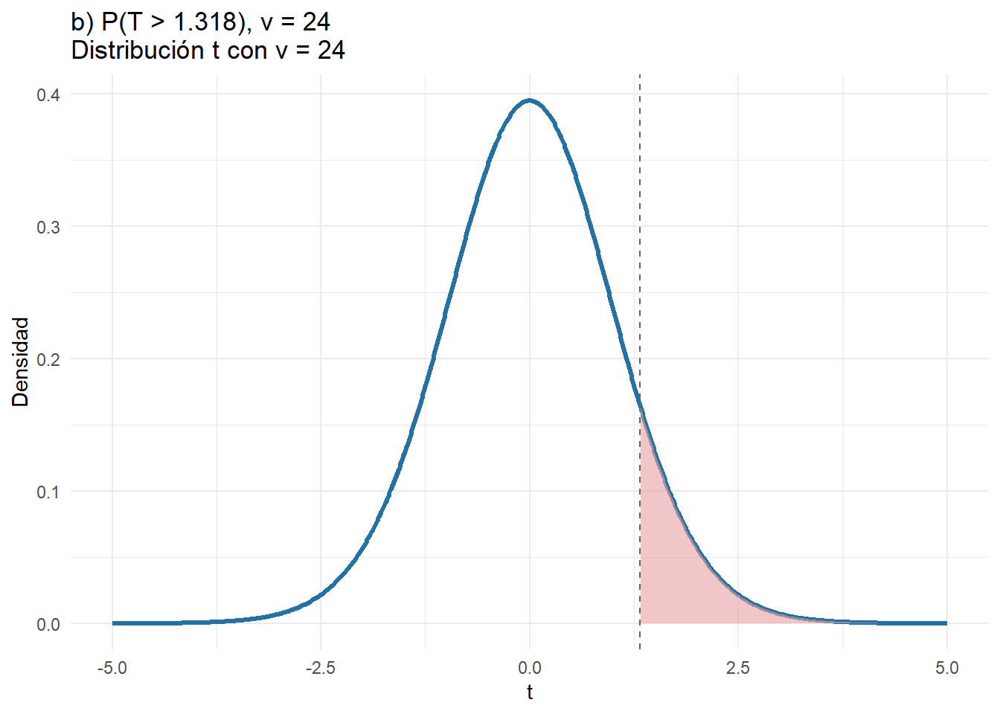
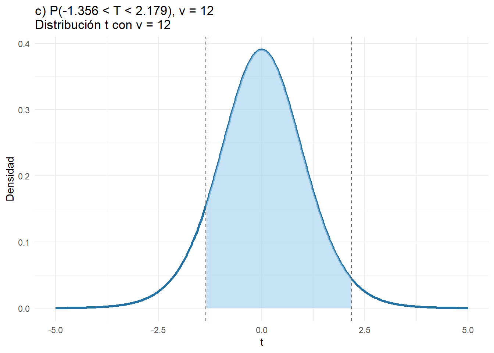
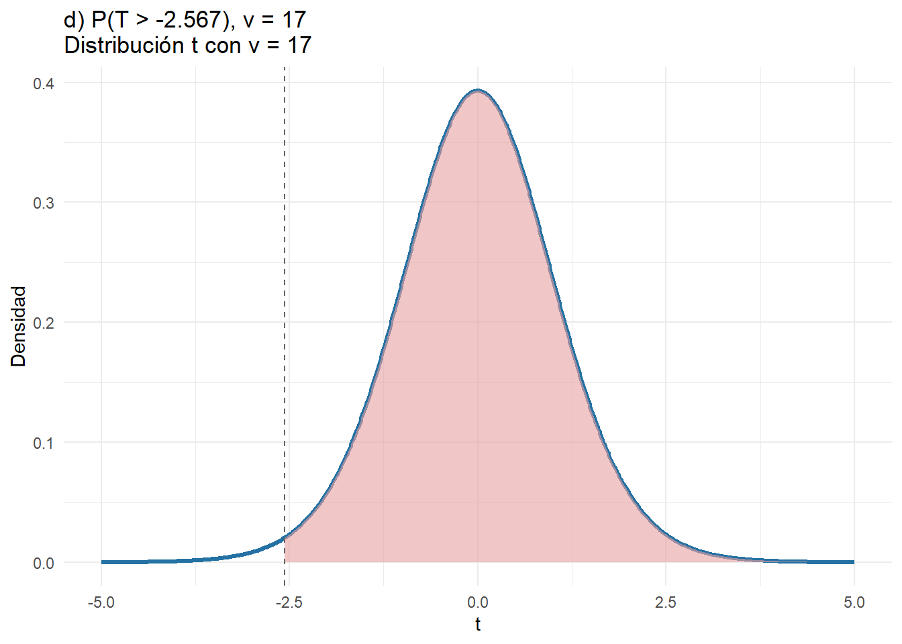
4.3.2 Ejercicio 8.49
Dada una muestra aleatoria de tamaño 24 de una distribución normal, encuentre k tal que:
- P(-2.069 < T < k) = 0.965
- P(k < T < 2.807) = 0.095
- P(-k < T < k) = 0.90
4.3.2.1 Solucion
Ver código
k_a <- qt(0.965 + pt(-2.069, df = 23), df = 23)
k_b <- qt(pt(2.807, df = 23) - 0.095, df = 23)
k_c <- qt(0.95, df = 23)
cat("[1]", round(k_a, 6), "\n")[1] 2.499077 Ver código
cat("[1]", round(k_b, 6), "\n")[1] 1.319437 Ver código
cat("[1]", round(k_c, 6), "\n")[1] 1.713872 4.3.2.2 Gráficos
Ver código
grafica_t_doc(23, "entre", v1=-2.069, v2=k_a,
titulo="a) P(-2.069 < T < k) = 0.965")
grafica_t_doc(23, "entre", v1=k_b, v2=2.807,
titulo="b) P(k < T < 2.807) = 0.095")
grafica_t_doc(23, "entre", v1=-k_c, v2=k_c,
titulo="c) P(-k < T < k) = 0.90")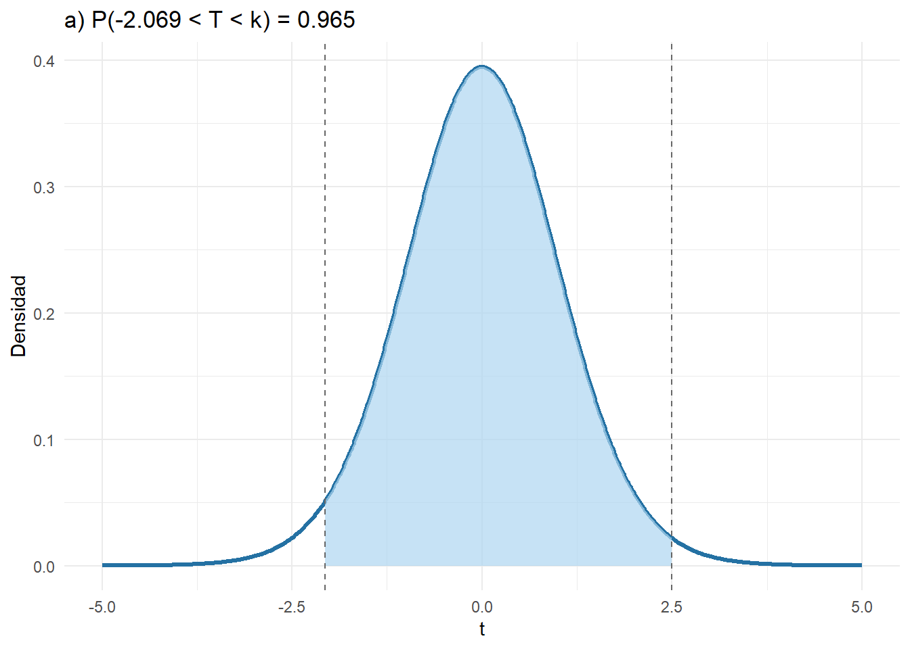
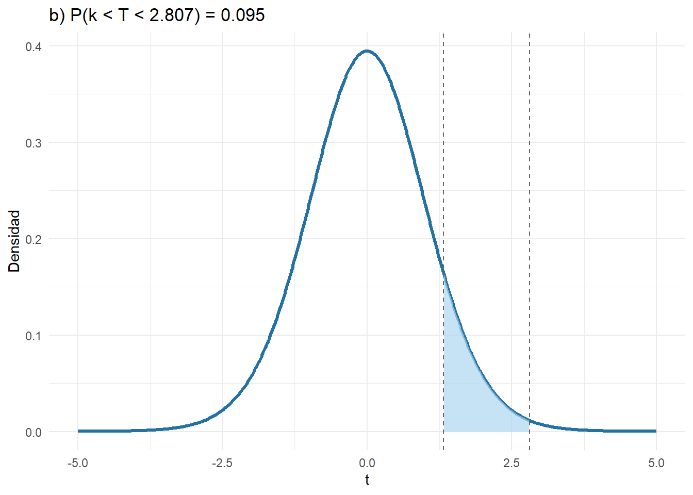
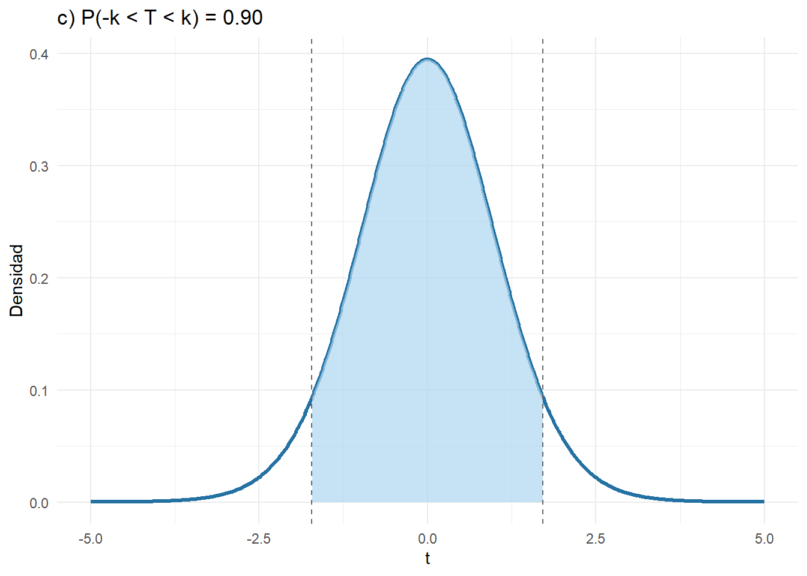
5 .Distribución F de Fisher
La distribución F, también conocida como F de Fisher-Snedecor, es una distribución de probabilidad continua que surge a partir de la razón entre dos variables aleatorias chi-cuadrado normalizadas por sus grados de libertad.
5.1 Definición formal
Si:
- X \sim \chi^2_{v_1} (una chi-cuadrado con v_1 grados de libertad),
- Y \sim \chi^2_{v_2} (otra chi-cuadrado con v_2 grados de libertad), y X y Y son independientes,
entonces la variable:
F = \frac{(X/v_1)}{(Y/v_2)}
sigue una distribución F con (v_1, v_2) grados de libertad.
5.2 Propiedades principales
- Soporte: F > 0, es decir, solo toma valores positivos.
- Asimétrica: la curva de densidad es sesgada a la derecha.
- Esperanza matemática: E(F) = \frac{v_2}{v_2-2}, para v_2 > 2.
- Varianza: \text{Var}(F) = \frac{2v_2^2(v_1+v_2-2)}{v_1(v_2-2)^2(v_2-4)}, para v_2 > 4.
5.3 Familia de Curvas F de Fisher
Ver código
x_f <- seq(0.001, 5, length.out = 500)
params_f <- list(
list(v1 = 1, v2 = 5, label = "v1=1, v2=5"),
list(v1 = 10, v2 = 20, label = "v1=10, v2=20"),
list(v1 = 2, v2 = 10, label = "v1=2, v2=10"),
list(v1 = 5, v2 = 10, label = "v1=5, v2=10")
)
df_f_fam <- bind_rows(lapply(params_f, function(p) {
data.frame(x = x_f, y = df(x_f, p$v1, p$v2), grupo = p$label)
}))
ggplot(df_f_fam, aes(x, y, color = grupo)) +
geom_line(linewidth = 1.1) +
ylim(0, 3.5) +
labs(title = "Familia de curvas de la distribución F",
x = "x", y = "Densidad", color = "Grados de libertad") +
theme_minimal()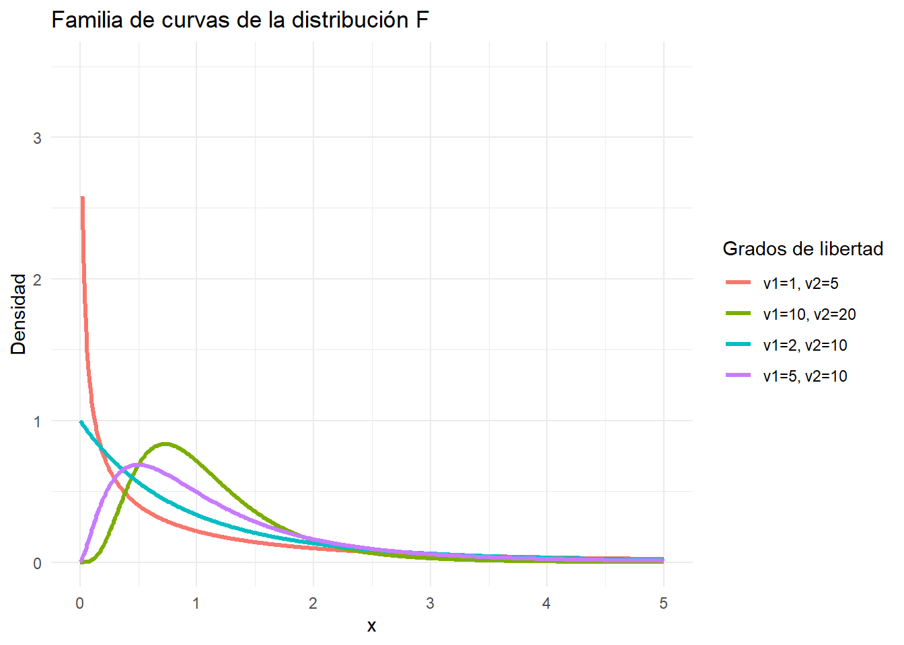
5.4 Ejercicios
5.4.1 Ejercicio 8.53
Para una distribución F encuentre:
- f_{0.05} con v_1 = 7 y v_2 = 15
- f_{0.05} con v_1 = 15 y v_2 = 7
- f_{0.01} con v_1 = 24 y v_2 = 19
- f_{0.95} con v_1 = 19 y v_2 = 24
- f_{0.99} con v_1 = 28 y v_2 = 12
Ver código
resultados_853 <- data.frame(
Inciso = c("1","2","3","4","5"),
Detalle = c("a","b","c","d","e"),
Valor_F = c(
qf(0.95, 7, 15),
qf(0.95, 15, 7),
qf(0.99, 24, 19),
qf(0.05, 19, 24),
qf(0.01, 28, 12)
)
)
print(resultados_853) Inciso Detalle Valor_F
1 1 a 2.7066268
2 2 b 3.5107402
3 3 c 2.9248656
4 4 d 0.4730049
5 5 e 0.34531815.4.1.1 Graficas
Ver código
grafica_f_doc <- function(v1, v2, alpha, cola="derecho", titulo="") {
x_max <- qf(0.999, v1, v2)
xf <- seq(0.001, x_max, length.out=600)
yf <- df(xf, v1, v2)
dat_f <- data.frame(x=xf, y=yf)
critico <- if (cola=="derecho") qf(1-alpha,v1,v2) else qf(alpha,v1,v2)
shade_f <- if (cola=="derecho") subset(dat_f,x>=critico) else subset(dat_f,x<=critico)
ggplot(dat_f, aes(x,y)) +
geom_line(color="#8E44AD", linewidth=1.1) +
geom_area(data=shade_f, aes(x,y), fill="#D2B4DE", alpha=0.6) +
geom_vline(xintercept=critico, linetype="dashed", color="#6C3483") +
labs(title=titulo,
subtitle=paste0("v1=",v1,", v2=",v2,", α=",alpha," | F=",round(critico,4)),
x="x", y="Densidad") + theme_minimal()
}
grafica_f_doc(7,15,0.05,"derecho","f0.05, v1=7, v2=15")
grafica_f_doc(15,7,0.05,"derecho","f0.05, v1=15, v2=7")
grafica_f_doc(24,19,0.01,"derecho","f0.01, v1=24, v2=19")
grafica_f_doc(19,24,0.05,"izquierdo","f0.95, v1=19, v2=24")
grafica_f_doc(28,12,0.01,"izquierdo","f0.99, v1=28, v2=12")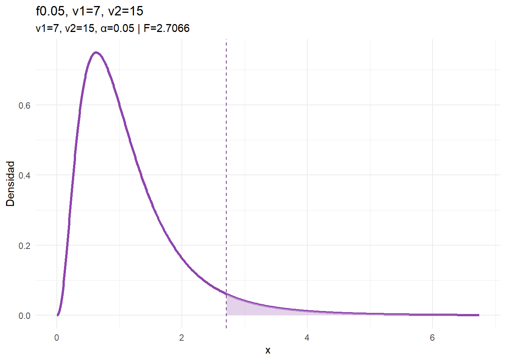
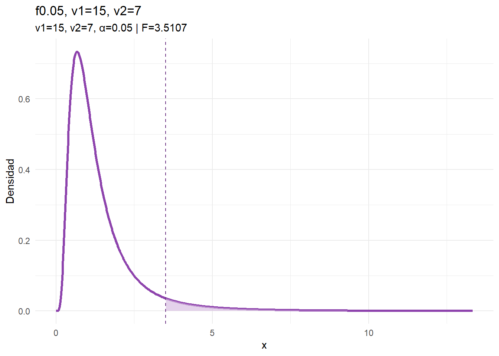
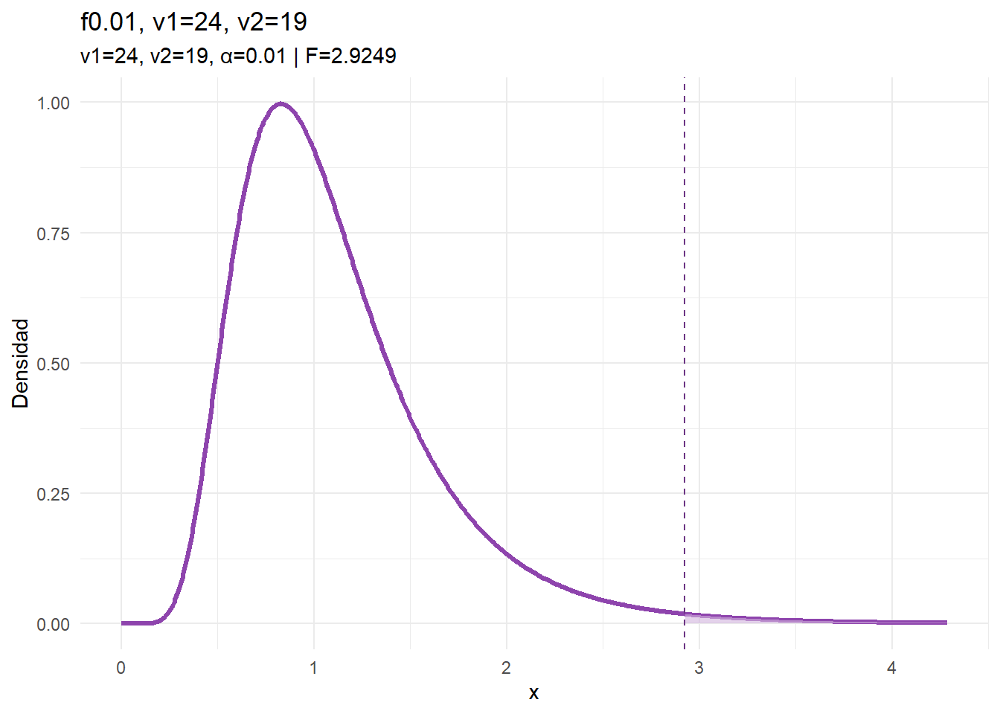
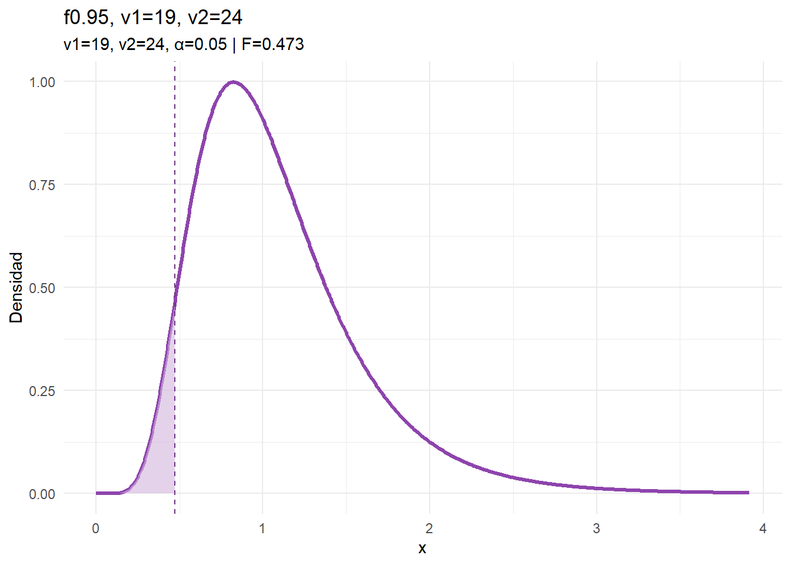
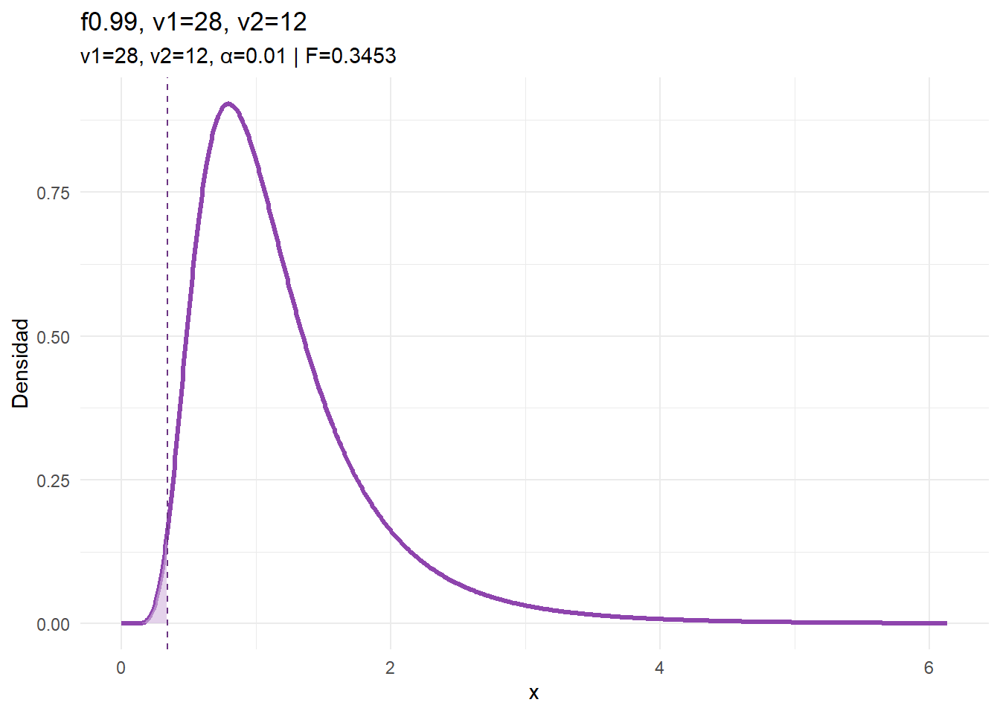
6 .Teorema del limite central
El Teorema del Límite Central (TLC) es uno de los conceptos más importantes en estadística. En términos simples, establece que la distribución de la media de una muestra se aproxima a una distribución normal a medida que el tamaño de la muestra aumenta, sin importar la forma de la distribución original de la población.
6.1 Puntos Clave del Teorema
Forma de la Distribución de Muestreo: La distribución de las medias de la muestra se vuelve normal, sin importar si la población original era normal, sesgada, uniforme o de cualquier otra forma.
Tamaño de la Muestra (n): La aproximación a la normalidad es más precisa a medida que el tamaño de la muestra (n) aumenta. Generalmente, una muestra de n \geq 30 es considerada suficiente.
Relación con la Media de la Población: \mu_{\bar{x}} = \mu
Error estándar: \sigma_{\bar{x}} = \frac{\sigma}{\sqrt{n}}
6.2 Simulacion para la distribucion Uniforme
6.2.1 Distribucion Uniforme original
Ver código
set.seed(123)
N <- 100000
a <- 0; b <- 1
poblacion_unif <- runif(N, min = a, max = b)
ggplot(data.frame(x = poblacion_unif), aes(x = x)) +
geom_histogram(aes(y = ..density..),
bins = 50,
fill = "lightgreen",
color = "black") +
labs(title = "Distribución de la población (Uniforme)",
x = "Valores", y = "Densidad") +
theme_minimal()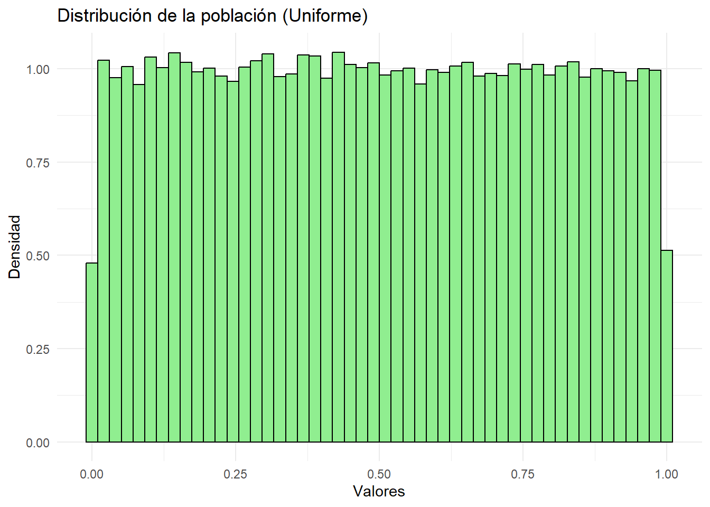
6.2.2 Simulacion TCL — Medias muestrales (Uniforme)
Ver código
set.seed(123)
n_unif <- 30
Nsim_unif <- 10000
medias_unif <- replicate(Nsim_unif, mean(runif(n_unif, min = a, max = b)))
mu_unif <- (a + b) / 2
sigma_unif <- (b - a) / sqrt(12)
df_pob_unif <- data.frame(x = poblacion_unif)
df_med_unif <- data.frame(x = medias_unif)
g1_unif <- ggplot(df_pob_unif, aes(x = x)) +
geom_histogram(aes(y = ..density..),
bins = 50,
fill = "lightgreen",
color = "black") +
stat_function(fun = dnorm,
args = list(mean = mu_unif, sd = sigma_unif),
color = "darkgreen", linewidth = 1) +
labs(title = "Población (Uniforme)",
x = "Valores", y = "Densidad") +
theme_minimal()
g2_unif <- ggplot(df_med_unif, aes(x = x)) +
geom_histogram(aes(y = ..density..),
bins = 30,
fill = "lightblue",
color = "black") +
stat_function(fun = dnorm,
args = list(mean = mu_unif, sd = sigma_unif / sqrt(n_unif)),
color = "red", linewidth = 1.2) +
labs(title = "Distribución muestral de la media (TCL)",
subtitle = "Aproximación normal (TCL)",
x = "Media muestral", y = "Densidad") +
theme_minimal()
library(gridExtra)
grid.arrange(g1_unif, g2_unif, ncol = 2)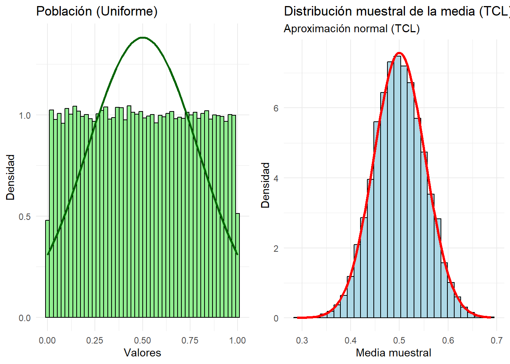
6.3 Simulacion para la distribucion binomial
6.3.1 Distribucion binomial original
Ver código
set.seed(42)
x_bin <- rbinom(1000, size = 10, prob = 0.35)
df_bin <- data.frame(x = x_bin)
ggplot(df_bin, aes(x = factor(x))) +
geom_bar(aes(y = after_stat(count)/sum(after_stat(count))),
fill = "#8DC63F", color = "white") +
labs(title = "Distribución Binomial Original",
x = "Número de Éxitos", y = "Probabilidad") +
theme_minimal()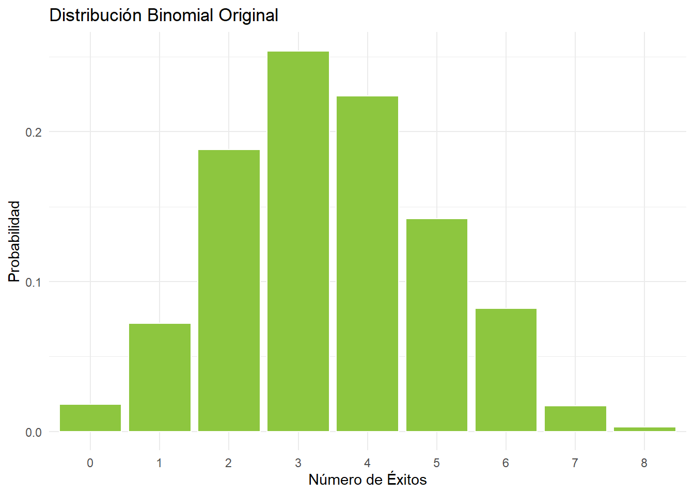
6.3.2 Distribucion de las medias muestrales
Ver código
set.seed(42)
medias_bin <- replicate(1000, mean(rbinom(30, size = 10, prob = 0.35)))
mu_bin <- mean(medias_bin); sd_bin <- sd(medias_bin)
ggplot(data.frame(media = medias_bin), aes(x = media)) +
geom_histogram(aes(y = after_stat(density)), bins = 30,
fill = "#8DC63F", color = "white", alpha = 0.85) +
stat_function(fun = dnorm, args = list(mean = mu_bin, sd = sd_bin),
color = "#1A5276", linewidth = 1.3, linetype = "dashed") +
labs(title = "Distribución de las Medias Muestrales",
subtitle = paste0("n=30 | μ≈", round(mu_bin,3), " σ≈", round(sd_bin,3)),
x = "Media de la Muestra", y = "Densidad") +
theme_minimal()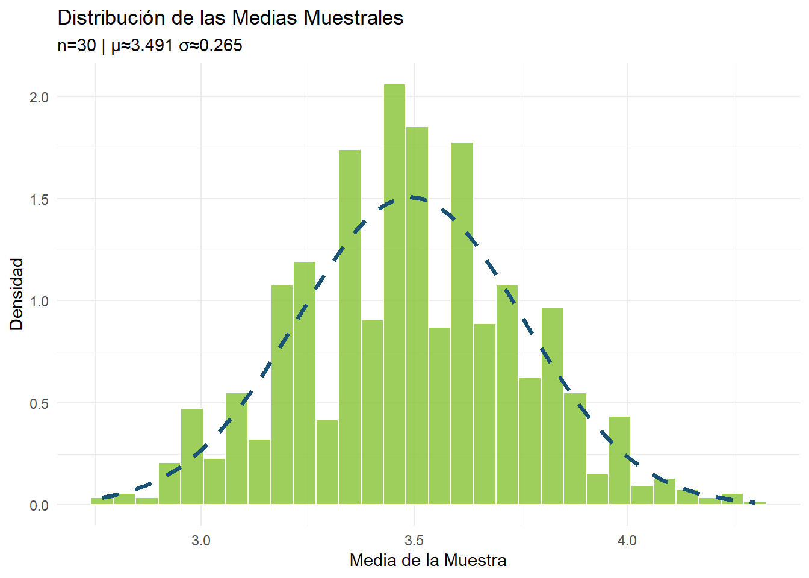
6.4 Simulacion para la distribucion de Poisson
6.4.1 Distribucion de Poisson original
Ver código
set.seed(42)
x_pois <- rpois(1000, lambda = 3.5)
ggplot(data.frame(x = x_pois), aes(x = factor(x))) +
geom_bar(aes(y = after_stat(count)/sum(after_stat(count))),
fill = "#FF69B4", color = "white") +
labs(title = "Distribucion de Poisson origianal",
x = "Number of Events", y = "Probability") +
theme_minimal()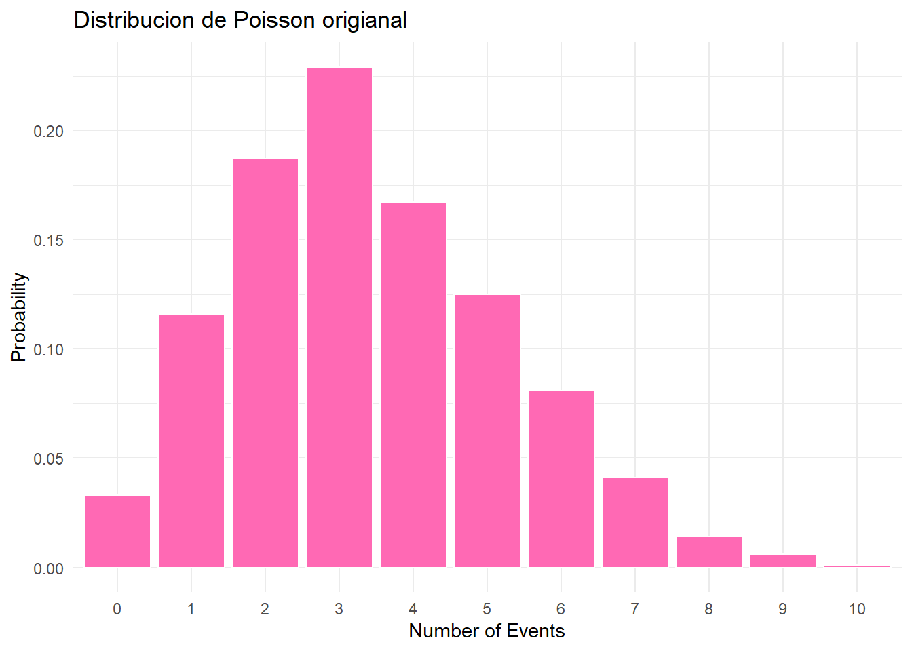
6.4.2 Distribucion de las medias muestrales
Ver código
set.seed(42)
medias_pois <- replicate(1000, mean(rpois(30, lambda = 3.5)))
mu_pois <- mean(medias_pois); sd_pois <- sd(medias_pois)
ggplot(data.frame(media = medias_pois), aes(x = media)) +
geom_histogram(aes(y = after_stat(density)), bins = 30,
fill = "#FF69B4", color = "white", alpha = 0.85) +
stat_function(fun = dnorm, args = list(mean = mu_pois, sd = sd_pois),
color = "#1A5276", linewidth = 1.3, linetype = "dashed") +
labs(title = "Distribución de las Medias Muestrales",
subtitle = paste0("n=30 | μ≈", round(mu_pois,3), " σ≈", round(sd_pois,3)),
x = "Sample Mean", y = "Density") +
theme_minimal()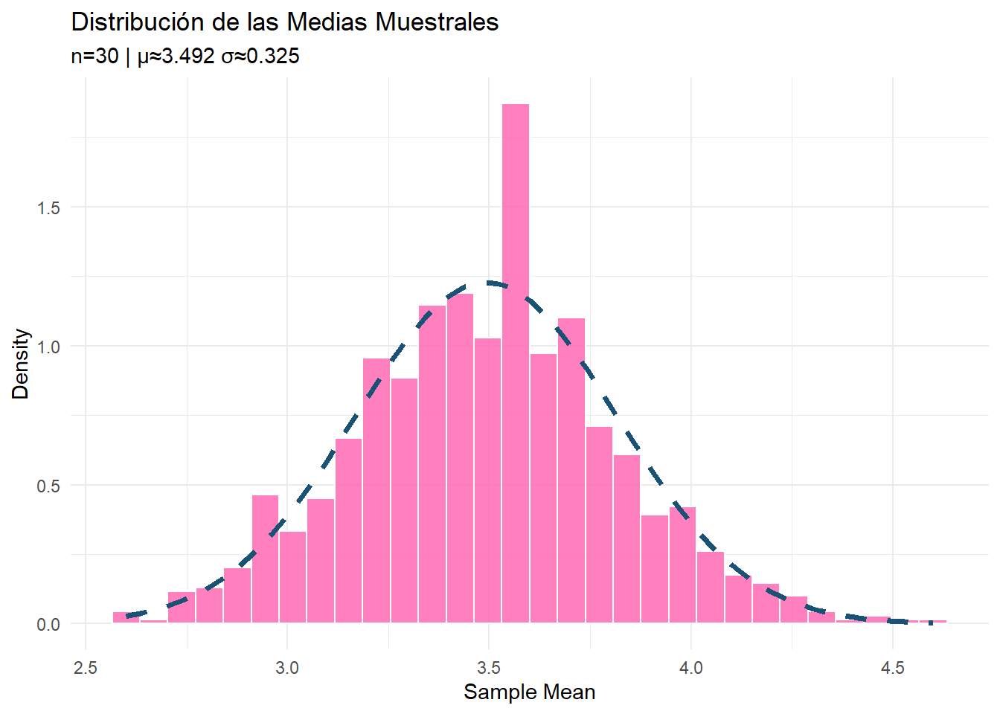
6.5 Simulacion para la distribucion Hipergeometrica
6.5.1 Distribucion Hipergeometrica original
Ver código
set.seed(42)
x_hiper <- rhyper(1000, m = 30, n = 20, k = 15)
ggplot(data.frame(x = x_hiper), aes(x = factor(x))) +
geom_bar(aes(y = after_stat(count)/sum(after_stat(count))),
fill = "#A0A0D0", color = "white") +
labs(title = "Distribución Hipergeométrica Original",
x = "Número de Éxitos en la Muestra", y = "Probabilidad") +
theme_minimal()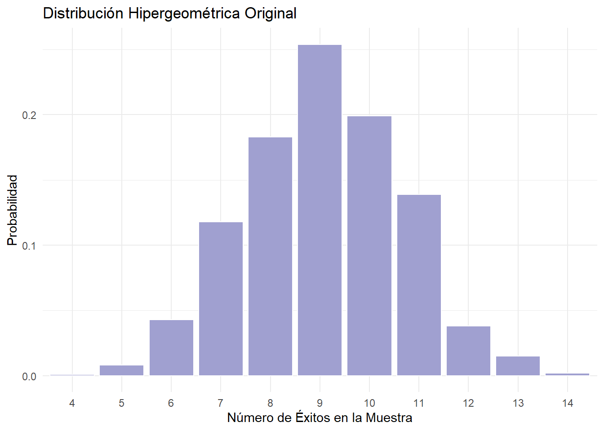
6.5.2 Distribucion de las medias muestrales
Ver código
set.seed(42)
medias_hiper <- replicate(1000, mean(rhyper(30, m = 30, n = 20, k = 15)))
mu_hiper <- mean(medias_hiper); sd_hiper <- sd(medias_hiper)
ggplot(data.frame(media = medias_hiper), aes(x = media)) +
geom_histogram(aes(y = after_stat(density)), bins = 30,
fill = "#A0A0D0", color = "white", alpha = 0.85) +
stat_function(fun = dnorm, args = list(mean = mu_hiper, sd = sd_hiper),
color = "#1A5276", linewidth = 1.3, linetype = "dashed") +
labs(title = "Distribución de las Medias Muestrales",
subtitle = paste0("n=30 | μ≈", round(mu_hiper,3), " σ≈", round(sd_hiper,3)),
x = "Media de la Muestra", y = "Densidad") +
theme_minimal()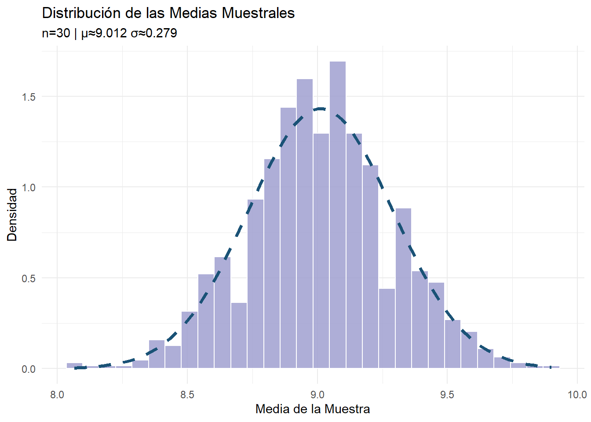
6.6 Simulacion para la distribucion Exponencial
6.6.1 Distribucion Exponencial original
Ver código
set.seed(123)
N_exp <- 100000
lambda_exp <- 1.5
poblacion_exp <- rexp(N_exp, rate = lambda_exp)
mu_exp <- 1 / lambda_exp
sigma_exp <- 1 / lambda_exp
ggplot(data.frame(x = poblacion_exp), aes(x = x)) +
geom_histogram(aes(y = ..density..),
bins = 60,
fill = "lightgreen",
color = "black") +
stat_function(fun = dnorm,
args = list(mean = mu_exp, sd = sigma_exp),
color = "darkgreen", linewidth = 1) +
labs(title = "Población Exponencial",
subtitle = "Distribución continua (asimétrica)",
x = "Valores", y = "Densidad") +
theme_minimal()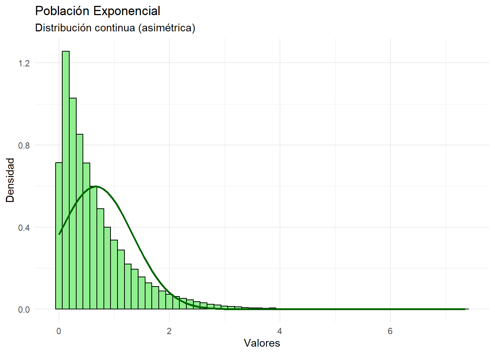
6.6.2 Distribucion de las medias muestrales (Exponencial)
Ver código
set.seed(123)
n_exp <- 30
Nsim_exp <- 10000
medias_exp <- replicate(Nsim_exp, mean(rexp(n_exp, rate = lambda_exp)))
df_pob_exp <- data.frame(x = poblacion_exp)
df_med_exp <- data.frame(x = medias_exp)
g1_exp <- ggplot(df_pob_exp, aes(x = x)) +
geom_histogram(aes(y = ..density..),
bins = 60,
fill = "lightgreen",
color = "black") +
stat_function(fun = dnorm,
args = list(mean = mu_exp, sd = sigma_exp),
color = "darkgreen", linewidth = 1) +
labs(title = "Población Exponencial",
subtitle = "Distribución continua (asimétrica)",
x = "Valores", y = "Densidad") +
theme_minimal()
g2_exp <- ggplot(df_med_exp, aes(x = x)) +
geom_histogram(aes(y = ..density..),
bins = 30,
fill = "lightblue",
color = "black") +
stat_function(fun = dnorm,
args = list(mean = mu_exp, sd = sigma_exp / sqrt(n_exp)),
color = "red", linewidth = 1.2) +
labs(title = "Distribución muestral de la media",
subtitle = "Aproximación normal (TCL)",
x = "Media muestral", y = "Densidad") +
theme_minimal()
grid.arrange(g1_exp, g2_exp, ncol = 2)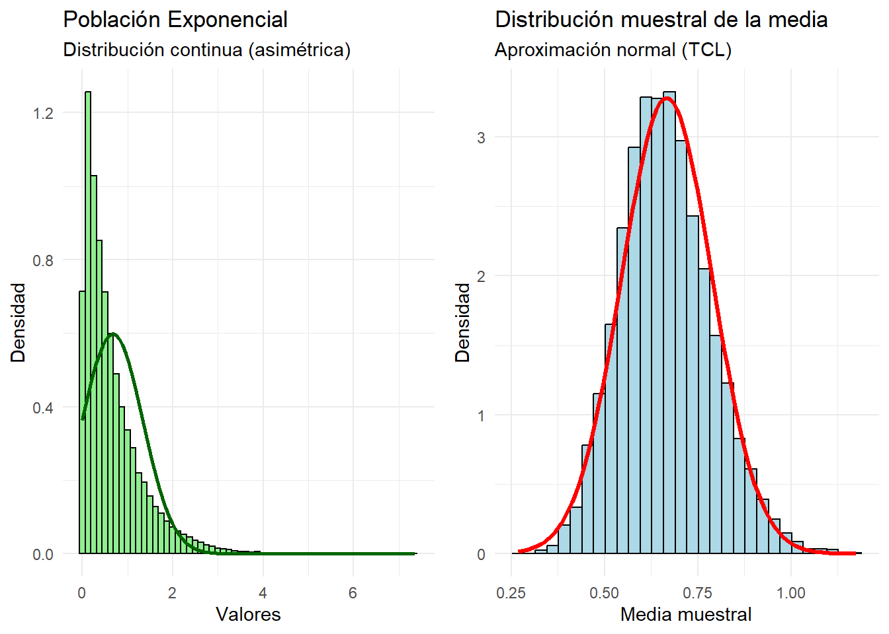
6.7 App Interactiva — Simulador TCL
La siguiente aplicación interactiva permite explorar el Teorema del Límite Central para cinco distribuciones: Uniforme, Binomial, Poisson, Hipergeométrica y Exponencial. Podés ajustar el tamaño de muestra, el número de simulaciones y los parámetros propios de cada distribución.
Ver código
library(shiny)
library(ggplot2)
library(gridExtra)
ui_tcl <- fluidPage(
titlePanel("Simulación del Teorema Central del Límite (TCL)"),
sidebarLayout(
sidebarPanel(
selectInput("dist", "Distribución:",
choices = c("Uniforme", "Binomial", "Poisson",
"Hipergeométrica", "Exponencial")),
conditionalPanel(
condition = "input.dist == 'Uniforme'",
numericInput("a", "Mínimo (a):", 0),
numericInput("b", "Máximo (b):", 1)
),
conditionalPanel(
condition = "input.dist == 'Binomial'",
numericInput("size", "Ensayos (n):", 10, min = 1),
sliderInput("p", "Probabilidad (p):", 0.3, 0, 1, step = 0.01)
),
conditionalPanel(
condition = "input.dist == 'Poisson'",
numericInput("lambda_pois", "Lambda:", 4, min = 0.1)
),
conditionalPanel(
condition = "input.dist == 'Hipergeométrica'",
numericInput("Npop", "Tamaño población (N):", 1000, min = 10),
numericInput("K", "Éxitos en población (K):", 300, min = 1),
numericInput("m", "Tamaño de muestra (m):", 20, min = 1)
),
conditionalPanel(
condition = "input.dist == 'Exponencial'",
numericInput("lambda_exp", "Lambda:", 1.5, min = 0.1)
),
hr(),
numericInput("n", "Tamaño de muestra (TCL):", 30, min = 1),
numericInput("Nsim", "Número de simulaciones:", 10000, min = 1000),
actionButton("simular", "Simular")
),
mainPanel(
plotOutput("plots", height = "450px")
)
)
)
server_tcl <- function(input, output) {
sim_data <- eventReactive(input$simular, {
set.seed(123)
N <- 100000
if (input$dist == "Uniforme") {
poblacion <- runif(N, input$a, input$b)
medias <- replicate(input$Nsim, mean(runif(input$n, input$a, input$b)))
mu <- (input$a + input$b) / 2
sigma <- (input$b - input$a) / sqrt(12)
} else if (input$dist == "Binomial") {
poblacion <- rbinom(N, input$size, input$p)
medias <- replicate(input$Nsim, mean(rbinom(input$n, input$size, input$p)))
mu <- input$size * input$p
sigma <- sqrt(input$size * input$p * (1 - input$p))
} else if (input$dist == "Poisson") {
poblacion <- rpois(N, input$lambda_pois)
medias <- replicate(input$Nsim, mean(rpois(input$n, input$lambda_pois)))
mu <- input$lambda_pois
sigma <- sqrt(input$lambda_pois)
} else if (input$dist == "Hipergeométrica") {
poblacion <- rhyper(N, m = input$K, n = input$Npop - input$K, k = input$m)
medias <- replicate(input$Nsim,
mean(rhyper(input$n,
m = input$K,
n = input$Npop - input$K,
k = input$m)))
mu <- input$m * (input$K / input$Npop)
sigma <- sqrt(input$m * (input$K / input$Npop) *
(1 - input$K / input$Npop) *
((input$Npop - input$m) / (input$Npop - 1)))
} else if (input$dist == "Exponencial") {
poblacion <- rexp(N, input$lambda_exp)
medias <- replicate(input$Nsim, mean(rexp(input$n, input$lambda_exp)))
mu <- 1 / input$lambda_exp
sigma <- 1 / input$lambda_exp
}
list(poblacion = poblacion, medias = medias, mu = mu, sigma = sigma)
})
output$plots <- renderPlot({
data <- sim_data()
df_pob <- data.frame(x = data$poblacion)
df_med <- data.frame(x = data$medias)
g1 <- ggplot(df_pob, aes(x = x)) +
geom_histogram(aes(y = ..density..),
bins = 50, fill = "lightgreen", color = "black") +
stat_function(fun = dnorm,
args = list(mean = data$mu, sd = data$sigma),
color = "darkgreen", linewidth = 1) +
labs(title = "Población", x = "Valores", y = "Densidad") +
theme_minimal()
g2 <- ggplot(df_med, aes(x = x)) +
geom_histogram(aes(y = ..density..),
bins = 30, fill = "lightblue", color = "black") +
stat_function(fun = dnorm,
args = list(mean = data$mu, sd = data$sigma / sqrt(input$n)),
color = "red", linewidth = 1.2) +
labs(title = "Distribución muestral de la media",
x = "Media muestral", y = "Densidad") +
theme_minimal()
grid.arrange(g1, g2, ncol = 2)
})
}
shinyApp(ui = ui_tcl, server = server_tcl)Documento generado con Quarto + Shiny — Dagoberto Salgado Horta — ESAP 2025